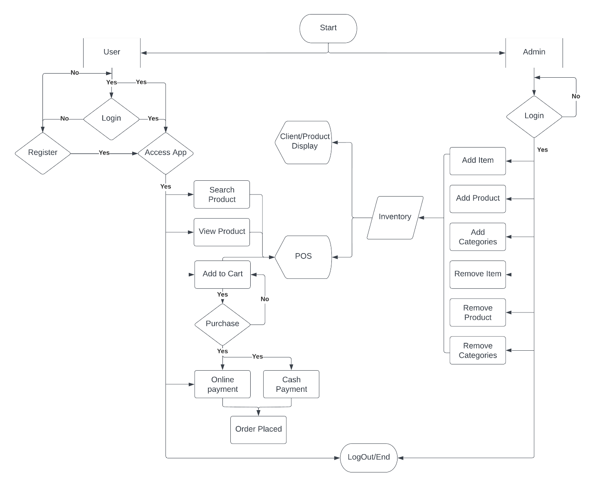
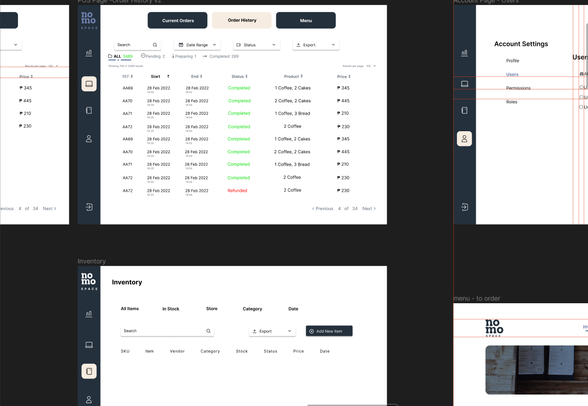
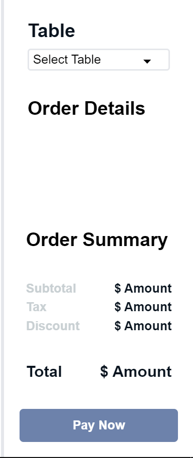

Nomo POS interface design
From product selection to table-based ordering, with a connected set of inventory and administration screens.
The need
Order taking and product administration need a coherent flow: staff select products and review orders while administrators maintain the catalog.
The approach
A user and administrator flowchart maps the journeys, supported by Figma screen concepts for ordering, account access, inventory, and reporting.
Visible workflow
- Product search, viewing, cart actions, and order placement.
- Table selection, order summaries, totals, and a checkout concept.
- Inventory, products, categories, orders, account settings, and dashboard layouts.
Intended value
A shared workflow and screen set gives stakeholders a concrete way to review the experience before implementation.
Project evidence
Select a screenshot to enlarge it.
 Enlarge screenshot
Enlarge screenshot {kind=link}

Enlarge screenshot{kind=link}

Enlarge screenshot{kind=link}

Enlarge screenshotPlanning a similar project?
Discuss a project